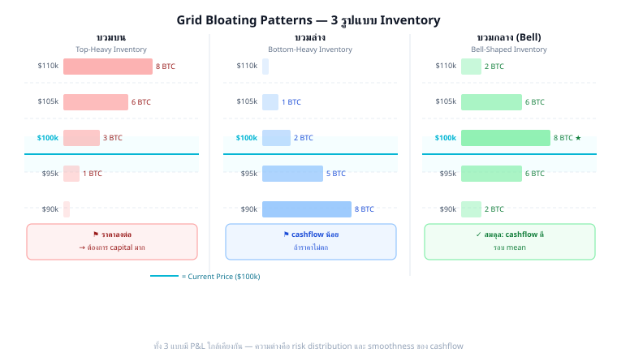

เมื่อราคาอยู่ในโซนหนึ่งนานๆ grid ซื้อสะสม inventory ในโซนนั้น — เรียกว่า grid บวม ในโซนนั้น
ตัวอย่าง: BTC ลงจาก $100k → $90k แล้วแกว่งที่ $90k–$95k นาน 2 สัปดาห์

3 รูปแบบ bloating — P&L รวมใกล้เคียงกัน แต่ risk distribution และ cashflow timing ต่างกัน
เกิดเมื่อ: ราคา เคยสูง แล้วลงมา — grid ซื้อระหว่างทางลง แต่ราคาไม่กลับขึ้นไปขาย
สามตัวเลือกข้างบนใช้ได้จริงทั้งสามทาง แต่ยังติดคำถามหนึ่งข้อ: เมื่อไหร่ควรใช้ตัวไหน?
ลองดูวิธีของคนที่เจอปัญหานี้มาก่อน grid trader หลายพันปี: แม่ค้าผลไม้ เวลาส้มในแผงค้างสต็อกเยอะ แม่ค้าไม่เคยปิดร้านหนี และไม่เคยรับซื้อส้มเพิ่มในราคาเดิมด้วย — เธอทำสองอย่างพร้อมกัน: กดราคารับซื้อลงอีกหน่อย (อยากได้ของเพิ่มก็ต้องถูกจริงๆ) และยอมขายออกไวขึ้นอีกหน่อย ยิ่งสต็อกหนัก ยิ่งกด-ยิ่งยอม พอสต็อกกลับมาปกติ ราคารับซื้อ-ขายก็เลื่อนกลับที่เดิม
นั่นแหละคือคำตอบทั้งหมด และมันบีบเหลือกฎข้อเดียว:
วัดความ "เต็มมือ" ด้วยสัดส่วนที่มีอยู่แล้วจาก Part 1A: ทุนที่ใช้ซื้อสะสมไปแล้ว (cumulative cost ในตาราง 1A.9) เทียบกับ C_floor (ทุนเต็มถ้าซื้อครบทุก level ถึง floor) — เรียกสั้นๆ ว่า "ถังเต็มกี่ %" แล้วสามตัวเลือกข้างบนก็เลิกเป็นทางแยก กลายเป็นสเกลเดียว:
| ถังเต็ม (cumulative cost / C_floor) | ทำอะไร | ตรงกับ |
|---|---|---|
| ต่ำกว่า 30% | เล่นตามปกติ — ยังมีพื้นที่รับของ | Option A: รอ |
| 30–70% | ขยับ step ฝั่งซื้อให้ห่างขึ้นตามสัดส่วนถัง (สูตรในกล่องด้านล่าง) | Option B: ลด Q / ขยาย step |
| เกิน 70% | หยุดรับของเพิ่ม แล้วปกป้องของที่มี | Option C: hedge (Part 1C) |
สังเกตว่า Step Pyramid ที่จะเจอในหัวข้อ 2.6 ก็คือกฎข้อนี้ในเวอร์ชันหยาบ (เพิ่ม step เมื่อ Hurst สูงขึ้น = เมื่อตลาดเริ่ม trend และถังกำลังจะเต็มเร็ว) — ตอนนั้นเราทำตามสัญชาตญาณ ตอนนี้เห็นแล้วว่าทำไมมันถูก: มันคือคำตอบเดียวกับที่งานวิจัยด้าน market making มืออาชีพคำนวณออกมาได้ (ดูอ่านต่อท้ายหัวข้อ) — จะเรียกมันว่า inventory skew หรือ "วิธีของแม่ค้าผลไม้" ก็ความหมายเดียวกัน
step ฝั่งซื้อไม้ถัดไป = step ปกติ × (1 + ถังเต็ม%) — ถังเต็ม 50% → step ห่างขึ้นครึ่งเท่า ถ้าอยากเข้มกว่านี้คูณด้วย λ เพิ่ม (default λ=1)
อ่านต่อ (ไม่จำเป็นต้องอ่านเพื่อใช้เล่มนี้): Avellaneda & Stoikov, "High-Frequency Trading in a Limit Order Book" (2008) — ต้นตำรับ inventory skew ของ market maker มืออาชีพ
เกิดเมื่อ: ราคา ดิ่งลงไกล สะสม inventory มาก แล้วค่อยๆ ฟื้น — levels ล่างๆ fill ซ้ำๆ บ่อย
เกิดเมื่อ: ราคาแกว่งรอบ mean อย่างสมดุล — Bell Curve Density (Part 1A) ออกแบบมาให้ได้ pattern นี้
ความเชื่อเดิม: Martingale อันตราย — เพิ่ม size เรื่อยๆ จนทุนหมด
ใน Close System: เราคำนวณ capital ทั้งหมดที่ต้องใช้ถึง floor ก่อน เปิด grid — Martingale แค่กำหนดว่าจะ allocate capital อย่างไรใน range ที่คำนวณไว้แล้ว
ตัวอย่าง: มี $10,000 · Close System บอกว่า worst case ใช้ $8,000 | Soft Martingale กำหนดว่าจาก $8,000 นั้นจะใช้มากขึ้นที่ level ล่าง — แต่ไม่เกิน $8,000 รวม
เมื่อตลาดมีแนวโน้ม (H เพิ่มขึ้น) — มีทางเลือก 2 แบบในการ "respond":
| Strategy | วิธี | ผลต่อ Cashflow | ผลต่อ Inventory Risk |
|---|---|---|---|
| Size Pyramid | เพิ่ม Q ที่ level ลึก (martingale) | คงที่ | สูงขึ้น (ซื้อมากถ้าลง) |
| Step Pyramid | เพิ่ม Step size แทน | ลดลงเล็กน้อย | ต่ำกว่า (fill น้อยกว่า) |
| Equal Weight | ไม่เปลี่ยนอะไร (baseline) | ลดลงตาม trend | สะสมเร็ว |
ทำไม Step Pyramid ดี: ในช่วง trend
Setup: Zone $80k–$110k · Step $2k · Capital $15,000 · 3 strategies เปรียบกัน
| Strategy | Inventory ที่ $85k | Capital ที่ใช้ | Cashflow/วัน (ที่ $83k–$88k) | Profit ถ้า BTC กลับ $100k |
|---|---|---|---|---|
| Equal Weight | 0.08 BTC | $7,200 | $36 | +$1,200 |
| Bottom-Heavy (บวมล่าง) | 0.14 BTC | $9,800 | $54 | +$2,100 |
| Bell Curve | 0.06 BTC | $5,400 | $28 | +$900 |
สังเกต: Bottom-Heavy ได้ทั้ง cashflow สูงสุดและ profit กลับมากสุด แต่ใช้ capital มากสุดด้วย
ถ้า BTC ลงต่อไป $70k: Bottom-Heavy มี max loss สูงสุด | Bell Curve มี max loss ต่ำสุด
สรุป: เลือก style ตาม conviction — ถ้ามั่นใจ BTC จะกลับ → Bottom-Heavy | ถ้าไม่แน่ใจ → Bell Curve
คำตอบ:
Top-Heavy เกิดเมื่อ grid เปิดที่ราคาสูง แล้วตลาดหัน downtrend
ตัวอย่าง: เปิด grid ที่ $110k (ATH) → BTC ลงมา $90k โดยไม่กลับ → inventory ที่ $108k, $106k, $104k, $102k, $100k ยังค้างอยู่
Signal: H เพิ่มจาก 0.45 → 0.60 (trending down) + ADX > 40 (BTC threshold)
Prevention: เปิด grid เมื่อ H < 0.50 เท่านั้น ไม่เปิดตอนราคา ATH
คำตอบ:
Size Pyramid: ในช่วง downtrend แต่ละ level ที่ลึกกว่ามี Q มากกว่า → ราคาลง $10k → ซื้อ 0.04 BTC แทน 0.01 → inventory เพิ่ม 4× เร็วกว่า
ถ้า trend ต่อเนื่อง: inventory "พอกพูน" exponentially → capital หมดเร็ว → margin call
Step Pyramid: Q คงที่แต่ step ใหญ่ขึ้น → fill ช้าลง → inventory สะสมช้า → capital ปลอดภัยกว่า
คำตอบ:
ราคาอยู่ที่ center (±1σ) 68% ของเวลา:
Bell Curve cashflow: 68% ของเวลา × 2 รอบ/วัน × (0.02 × $2k − fee) ≈ 68% × 2 × $38 = $51.7/วัน (center zone)
+ 32% ของเวลา × 0.5 รอบ/วัน × $8 (extreme, Q เล็ก) = $1.3/วัน
= $53/วัน Bell Curve
Equal Weight: 2 รอบ/วัน × 0.01 × $2k = $40/วัน (ทุก zone เท่ากัน)
Bell Curve ดีกว่า 33% เพราะ concentrate Q ในโซนที่ราคาอยู่นานที่สุด
คำตอบ:
รอ (Close System): ถ้ายังเชื่อว่าราคาจะกลับ → รอ inventory ขายออกเองเมื่อราคาฟื้น | ไม่มี loss realized
Reset Grid: ถ้า Hurst เพิ่ม (trending down), ATR เพิ่ม, fundamentals เปลี่ยน → ขาย inventory บางส่วน (ยอม realize loss) แล้วเปิด grid ใหม่ที่ lower zone
Rule of Thumb: ใช้เกณฑ์เดียวกับ §2.2 — ถังเต็ม (cumulative cost / C_floor) ต่ำกว่า 70% ยังรอได้ (Close System ยังมีที่เหลือ) | เกิน 70% และ regime ชัดว่า trending (H สูงขึ้น, ATR เพิ่ม) → พิจารณา Reset Grid